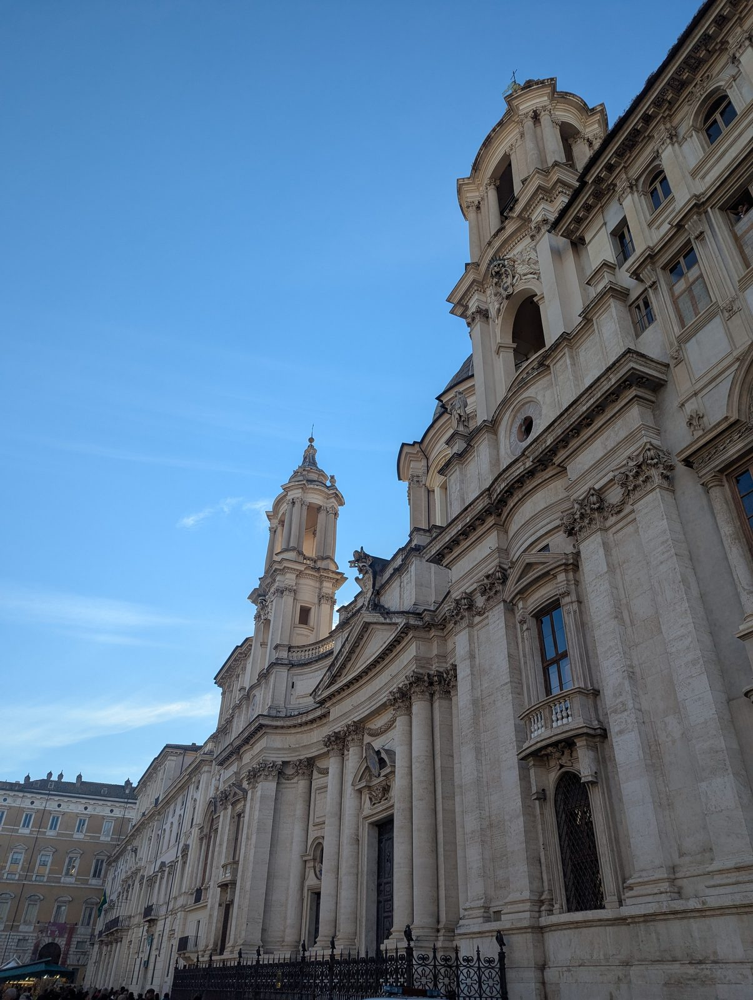
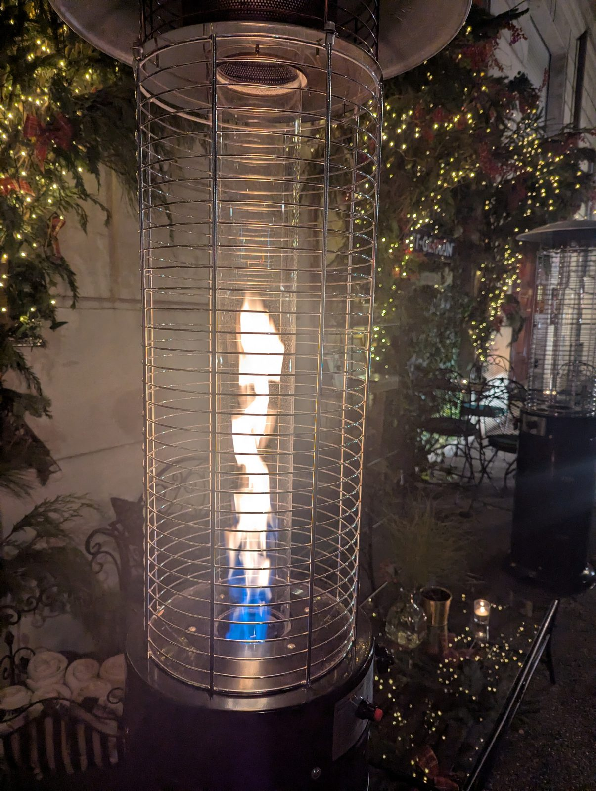
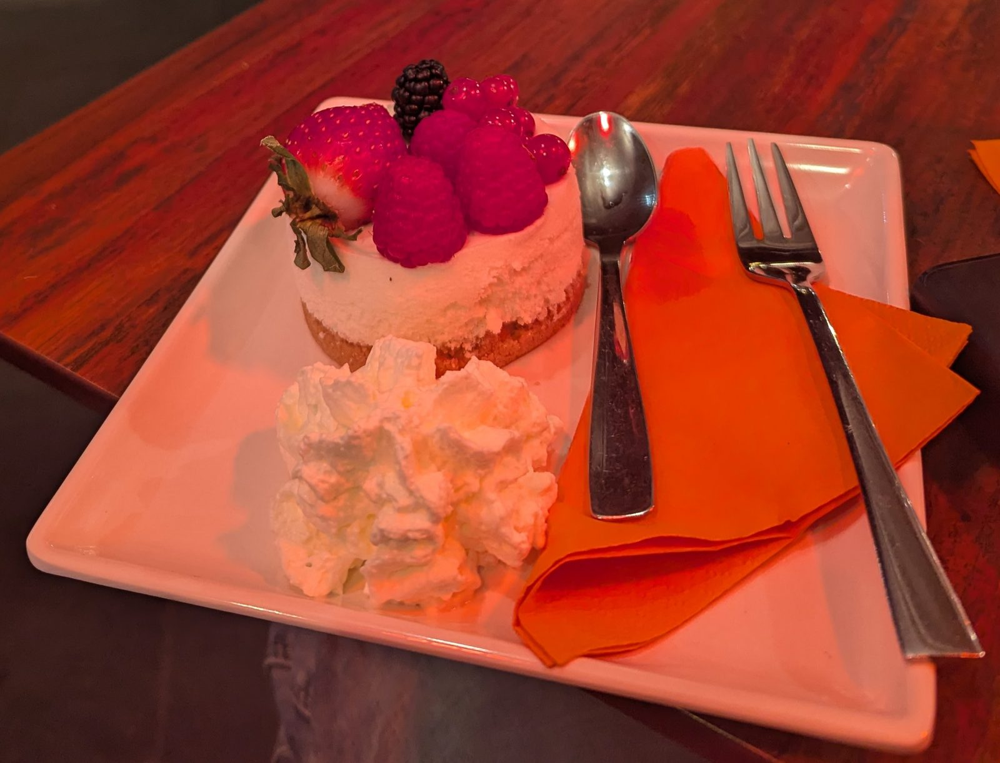

The smallest country in the world
Since I was already in Rome, exploring the smallest country in the world was easy: it’s right there in the middle of the city.
St Peter’s, from the outside
I saw the majestic St Peter’s Basilica from the outside. I didn’t have time to go in, and that’s my biggest regret from the trip.

Into the Vatican Museums
On a friend’s suggestion I went to the Vatican Museums instead, and it was one of the best decisions I’ve ever taken. It was surreal. Walking through those halls felt like time travelling.
Ceilings that stop you in your tracks
Michelangelo’s work in the Sistine Chapel, the Creation of Adam, the architecture all around, and treasures brought from as far as Egypt. Every room had another ceiling worth looking up at.
A mystic, mysterious vibe
The whole place had a mystic, mysterious vibe. The one piece of music that kept popping into my head was Threnody for Europe by Thomas Bergersen.
It felt like time travelling.


